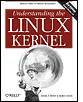

{% include JB/setup %}
{% raw %}
<div>


<table width="627" border="0" cellspacing="0" cellpadding="0" class="calibre1"><tr valign="top" class="calibre2"><td class="v" width="98"></td><td class="v1" height="20"><table cellpadding="0" cellspacing="0" border="0" class="calibre4"><tr class="calibre2"><td colspan="3" class="v2" height="20"><b class="calibre5">Understanding the Linux Kernel, 3rd Edition</b></td></tr><tr class="calibre2"><td colspan="3" class="v2" height="18">By 
											<a target="_new" class="pcalibre v3 pcalibre2 pcalibre1">Daniel P. Bovet</a>, <a target="_new" class="pcalibre v3 pcalibre2 pcalibre1">Marco Cesati</a></td></tr><tr class="calibre2"><td class="aCells pcalibre3" colspan="3">...............................................</td></tr><tr class="calibre2"><td colspan="3" class="aCells1 pcalibre3">Publisher: <b class="calibre5">O'Reilly</b></td></tr><tr class="calibre2"><td colspan="3" class="aCells1 pcalibre3">Pub Date: <b class="calibre5">November 2005</b></td></tr><tr class="calibre2"><td colspan="3" class="aCells1 pcalibre3">ISBN: <b class="calibre5">0-596-00565-2</b></td></tr><tr class="calibre2"><td colspan="3" class="aCells1 pcalibre3">
                    Pages: <b class="calibre5">942</b></td></tr><tr class="calibre2"><td class="aCells1 pcalibre3"/><td width="75%" colspan="2" class="aCells2 pcalibre3"> </td></tr></table></td><td class="calibre6"><br class="calibre7"/><br class="calibre7"/><div class="calibre8"></div></td></tr></table><br class="calibre7"/><table width="627" border="0" cellspacing="0" cellpadding="0" class="calibre1"><tr class="calibre2"><td class="pcalibre4 aTopMenu"><a title="Table of Contents" href="toc.html" class="pcalibre4 aTopMenu1">Table of Contents</a>
												   | <a title="Index" href="index.html" class="pcalibre4 aTopMenu1">Index</a></td><td valign="bottom" class="calibre9"/><td valign="bottom" class="calibre9"/></tr></table><table border="0" cellpadding="3" class="calibre1"><tr class="calibre2"><td class="v" valign="top"></td></tr><tr class="calibre2"><td class="v" valign="top"><p class="docText">In order to thoroughly understand what makes Linux tick and
why it works so well on a wide variety of systems, you need
to delve deep into the heart of the kernel. The kernel
handles all interactions between the CPU and the external
world, and determines which programs will share processor
time, in what order. It manages limited memory so well that
hundreds of processes can share the system efficiently, and
expertly organizes data transfers so that the CPU isn't kept
waiting any longer than necessary for the relatively slow
disks.<br class="calibre7"/>
</p><p class="docText"><br class="calibre7"/>
The third edition of <span class="docEmphasis">Understanding the Linux
Kernel</span> takes you on a guided tour of the most
significant data structures, algorithms, and programming
tricks used in the kernel. Probing beyond superficial
features, the authors offer valuable insights to people who
want to know how things really work inside their machine. 
Important Intel-specific features are discussed. Relevant
segments of code are dissected line by line. But the book
covers more than just the functioning of the code; it
explains the theoretical underpinnings of why Linux does
things the way it does.<br class="calibre7"/>
</p><p class="docText"><br class="calibre7"/>
This edition of the book covers Version 2.6, which has seen
significant changes to nearly every kernel subsystem,
particularly in the areas of memory management and block
devices. The book focuses on the following topics:<br class="calibre7"/>
</p><ul class="calibre11"><li class="calibre12"><p class="docText">Memory management, including
file buffering, process swapping, and Direct memory Access
(DMA) </p></li><li class="calibre12"><p class="docText">The Virtual Filesystem layer and the Second
and Third Extended Filesystems</p></li><li class="calibre12"><p class="docText">Process creation and
scheduling</p></li><li class="calibre12"><p class="docText">Signals, interrupts, and the essential
interfaces to device drivers</p></li><li class="calibre12"><p class="docText">Timing</p></li><li class="calibre12"><p class="docText">Synchronization within the
kernel</p></li><li class="calibre12"><p class="docText">Interprocess Communication (IPC)
</p></li><li class="calibre12"><p class="docText">Program
execution</p></li></ul><p class="docText"><br class="calibre7"/>
<br class="calibre7"/>
<span class="docEmphasis">Understanding the Linux Kernel</span> will
acquaint you with all the inner workings of Linux, but it's
more than just an academic exercise. You'll learn what
conditions bring out Linux's best performance, and you'll
see how it meets the challenge of providing good system
response during process scheduling, file access, and memory
management in a wide variety of environments. This book will
help you make the most of your Linux system.</p></td></tr></table>
<br class="calibre7"/>

</div>

{% endraw %}

